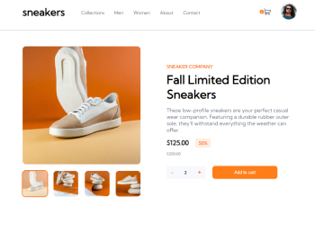
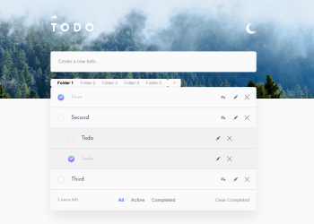

Я Настя, начинающий фронтенд-разработчик.
Умею работать с :
- HTML
- CSS
- JS
- React
- React Router
- Flex
- Grid
- Figma
- Git
Также знакома с:
- GSAP
- Pug
- SCSS
- Redux
- Photoshop
- Bootstrap
Проекты с использованием React:
-
 Игра "Камень-ножницы-бумага". Написано с помощью библиотеки React, для анимаций использована библиотека react-spring, для управления состоянием счета игры использована библиотека Redux. Задание и дизайн взяты с сайта Frontend Mentor.
Игра "Камень-ножницы-бумага". Написано с помощью библиотеки React, для анимаций использована библиотека react-spring, для управления состоянием счета игры использована библиотека Redux. Задание и дизайн взяты с сайта Frontend Mentor.
Ссылка на GitHub-репозиторий.
Ссылка на GitHub-pages. -
Форма из четырех шагов для сбора данных пользователя. Позволяет собрать персональные данные, выбранные опции и тарифы и собрать их вместе, при необходимости отправив в удобном виде на сервер для обработки. Задание и дизайн взяты с сайта Frontend Mentor.
Ссылка на GitHub-репозиторий.
Ссылка на GitHub-pages. - 
-
Таблица с возможностю добавления, изменения и удаления клиентов, их фильтрацией и сортировкой. Задание выдано онлайн-школой Skillbox в рамках курса по JavaScript, мной выполнено с использованием библиотек React и react-table для дополнитеьной практики работы с библиотеками.
Ссылка на GitHub-репозиторий.
Ссылка на GitHub-pages.
Проекты на JavaScript:
-

Приложение для записи дел с возможностью редактирования дел, переключения темной и светлой темы, загрузки своего изображения вместо стандартного. В последнем обновлении были добавлены папки для хранения дел по разным категориям. Самый полезный и любимый проект, периодически добавляю новый функционал, в планах сделать полноценное удобное приложение. Задание взято с сайта Frontend Mentor.
Ссылка на GitHub-репозиторий.
Ссылка на GitHub-pages.
Проекты по верстке сайтов:
-
 Двустраничный сайт приюта для животных. Задание и дизайн были выданы в рамках челленджа от Rolling Stones School.
Двустраничный сайт приюта для животных. Задание и дизайн были выданы в рамках челленджа от Rolling Stones School.
Ссылка на GitHub-репозиторий.
Ссылка на GitHub-pages. -